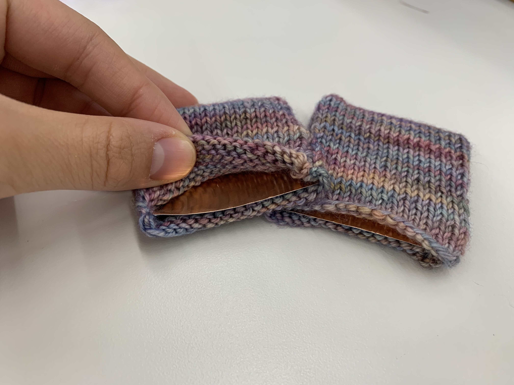
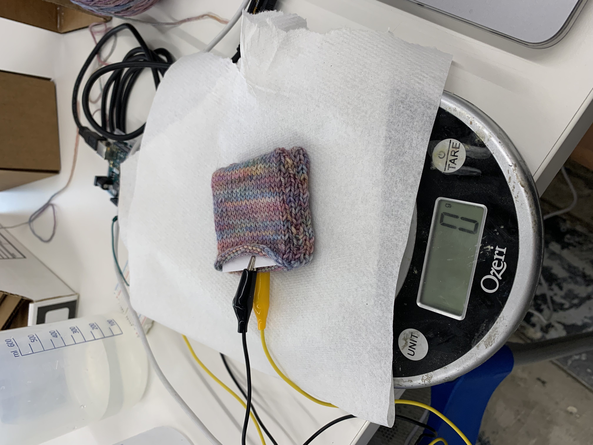
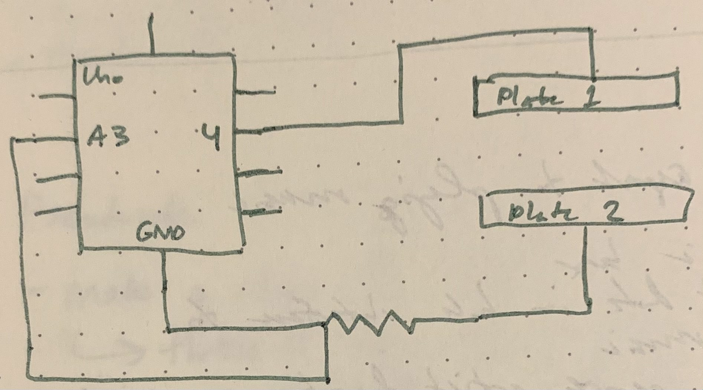
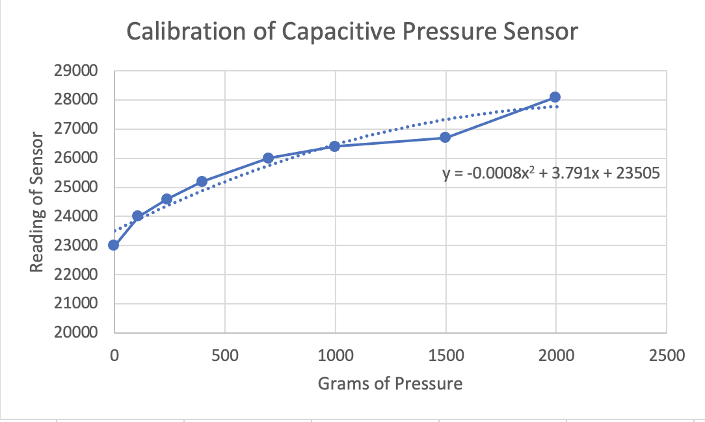
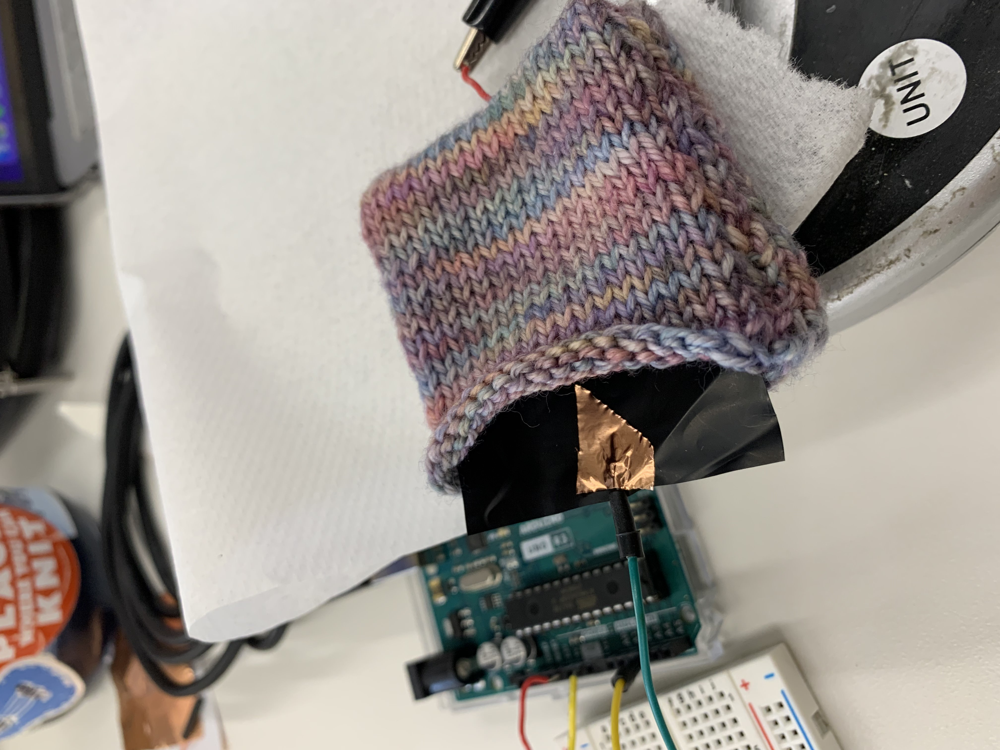
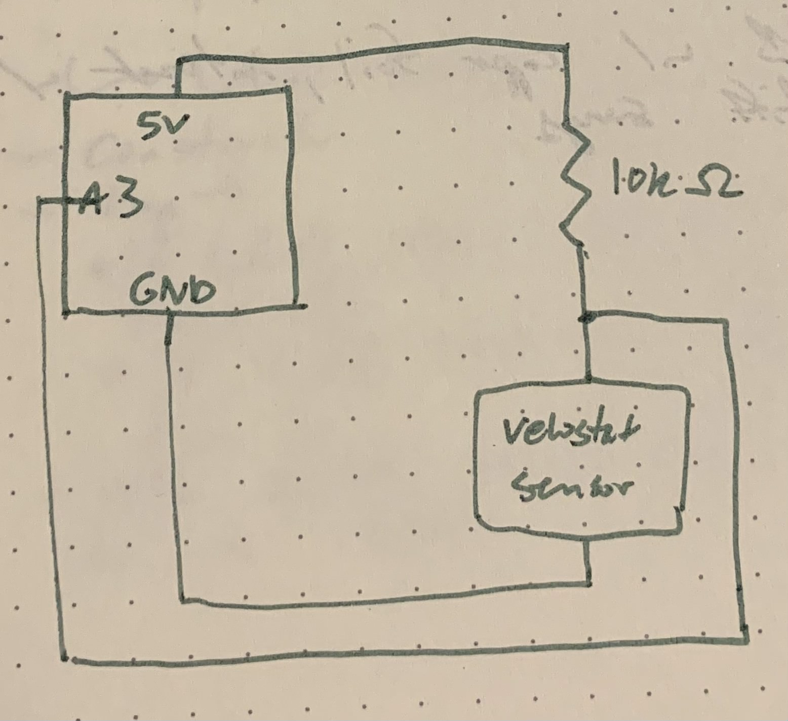
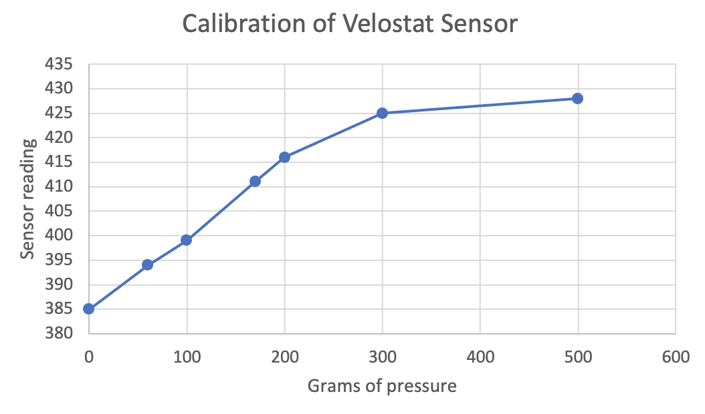

<br>
### Week 6: Electronic input devices
This week's project was to build a capacitive sensor. As an avid knitter, I knew I wanted to use harness knitting to create some kind of flexible sensor. I decided to make a pressure sensor enclosed in a knit fabric envelope, with the end goal of measuring how many pounds of force were on the sensor. This could be applied in something like a massage setting, where the sensor could be incorporated into a garment to help the person giving the massage calibrate how much force they're using.
The design of the sensor is simple: I'll cut two pieces of copper foil and enclose each in a knit pocket. Then. I'll lay them on top of each other and sew the two pockets together to keep the copper plates in a relatively stable position. Finally, I'll calibrate the sensor.
I began by knitting a piece of fabric to enclose each copper foil piece. I chose a thin yarn so the double layer of fabric separating each foil piece wouldn't be too thick and so that the fabric would be lightweight and comfortable. Quick knitting pattern for knitters: Using fingering weight yarn, cast on 20 sts on US size 3 needles, knit stockinette stitch until the length of the fabric is twice the width, then bind off. Fold the fabric in half with the wrong sides facing out, creating a pocket. Seam the sides together. Turn the pocket inside out so the right sides are facing out.
I then cut squares of copper foil to fit in each pocket. Here's how the pockets look:

Next, I seamed them together such that the copper plates faced each other:

With the sensor set up, it was time to build the circuit, which was quite simple. I connected pin 4 to one of the copper plates, because pin 4 provided the voltage steps. I connected the second copper plate to a resistor, then to pin A3 as the analog input pin. This is a schematic I drew of the circuit:

After making the circuit, I adapted Nathan's Tx-Rx capacitive sensing [code](https://nathanmelenbrink.github.io/lab/input/capacitance/txrx.html) by elimating the use of delay() using timers. Here's the code I wound up with:
<pre><code class="language-arduino">
<pre>
<font color="#00979c">long</font> <font color="#000000">result</font><font color="#000000">;</font> &nbsp;&nbsp;<font color="#434f54">&#47;&#47; Variable for the result of the tx_rx measurement.</font>
<font color="#00979c">int</font> <font color="#000000">analog_pin</font> <font color="#434f54">=</font> <font color="#000000">A3</font><font color="#000000">;</font>
<font color="#00979c">int</font> <font color="#000000">tx_pin</font> <font color="#434f54">=</font> <font color="#000000">4</font><font color="#000000">;</font>
<font color="#00979c">long</font> <font color="#000000">previousMillis</font><font color="#000000">;</font> <font color="#434f54">&#47;&#47; Stores the time</font>
<font color="#00979c">long</font> <font color="#000000">interval</font> <font color="#434f54">=</font> <font color="#000000">0.1</font><font color="#000000">;</font> <font color="#434f54">&#47;&#47; How many milliseconds should be waited before the measurement is </font>
&nbsp;&nbsp;&nbsp;&nbsp;&nbsp;&nbsp;&nbsp;&nbsp;&nbsp;&nbsp;&nbsp;&nbsp;&nbsp;&nbsp;&nbsp;&nbsp;&nbsp;&nbsp;&nbsp;&nbsp;<font color="#434f54">&#47;&#47;taken (delay is to reach steady state)</font>
<font color="#00979c">void</font> <font color="#5e6d03">setup</font><font color="#000000">(</font><font color="#000000">)</font> <font color="#000000">{</font>
&nbsp;&nbsp;&nbsp;<font color="#d35400">pinMode</font><font color="#000000">(</font><font color="#000000">tx_pin</font><font color="#434f54">,</font> <font color="#00979c">OUTPUT</font><font color="#000000">)</font><font color="#000000">;</font> &nbsp;&nbsp;&nbsp;&nbsp;&nbsp;<font color="#434f54">&#47;&#47;Pin 4 provides the voltage step</font>
&nbsp;&nbsp;&nbsp;<b><font color="#d35400">Serial</font></b><font color="#434f54">.</font><font color="#d35400">begin</font><font color="#000000">(</font><font color="#000000">9600</font><font color="#000000">)</font><font color="#000000">;</font>
<font color="#000000">}</font>
<font color="#00979c">void</font> <font color="#5e6d03">loop</font><font color="#000000">(</font><font color="#000000">)</font> <font color="#000000">{</font>
&nbsp;&nbsp;&nbsp;<font color="#000000">result</font> <font color="#434f54">=</font> <font color="#000000">tx_rx</font><font color="#000000">(</font><font color="#000000">)</font><font color="#000000">;</font>
&nbsp;&nbsp;&nbsp;<b><font color="#d35400">Serial</font></b><font color="#434f54">.</font><font color="#d35400">println</font><font color="#000000">(</font><font color="#000000">result</font><font color="#000000">)</font><font color="#000000">;</font>
<font color="#000000">}</font>
<font color="#00979c">long</font> <font color="#000000">tx_rx</font><font color="#000000">(</font><font color="#000000">)</font><font color="#000000">{</font> &nbsp;&nbsp;&nbsp;&nbsp;&nbsp;&nbsp;&nbsp;&nbsp;<font color="#434f54">&#47;&#47; Function to execute rx_tx algorithm and return a value</font>
&nbsp;&nbsp;&nbsp;&nbsp;&nbsp;&nbsp;&nbsp;&nbsp;&nbsp;&nbsp;&nbsp;&nbsp;&nbsp;&nbsp;&nbsp;&nbsp;&nbsp;&nbsp;&nbsp;&nbsp;&nbsp;<font color="#434f54">&#47;&#47; that depends on coupling of two electrodes.</font>
&nbsp;&nbsp;&nbsp;&nbsp;&nbsp;&nbsp;&nbsp;&nbsp;&nbsp;&nbsp;&nbsp;&nbsp;&nbsp;&nbsp;&nbsp;&nbsp;&nbsp;&nbsp;&nbsp;&nbsp;&nbsp;<font color="#434f54">&#47;&#47; Value returned is a long integer.</font>
&nbsp;<font color="#00979c">int</font> <font color="#000000">read_high</font><font color="#000000">;</font>
&nbsp;<font color="#00979c">int</font> <font color="#000000">read_low</font><font color="#000000">;</font>
&nbsp;<font color="#00979c">int</font> <font color="#000000">diff</font><font color="#000000">;</font>
&nbsp;<font color="#00979c">long</font> <font color="#00979c">int</font> <font color="#000000">sum</font><font color="#000000">;</font>
&nbsp;<font color="#00979c">int</font> <font color="#000000">N_samples</font> <font color="#434f54">=</font> <font color="#000000">100</font><font color="#000000">;</font> &nbsp;&nbsp;&nbsp;<font color="#434f54">&#47;&#47; Number of samples to take. &nbsp;Larger number slows it down, but reduces scatter.</font>
&nbsp;<font color="#00979c">unsigned</font> <font color="#00979c">long</font> <font color="#000000">currentMillis</font> <font color="#434f54">=</font> <font color="#d35400">millis</font><font color="#000000">(</font><font color="#000000">)</font><font color="#000000">;</font>
&nbsp;<font color="#000000">sum</font> <font color="#434f54">=</font> <font color="#000000">0</font><font color="#000000">;</font>
&nbsp;<font color="#5e6d03">for</font> <font color="#000000">(</font><font color="#00979c">int</font> <font color="#000000">i</font> <font color="#434f54">=</font> <font color="#000000">0</font><font color="#000000">;</font> <font color="#000000">i</font> <font color="#434f54">&lt;</font> <font color="#000000">N_samples</font><font color="#000000">;</font> <font color="#000000">i</font><font color="#434f54">++</font><font color="#000000">)</font><font color="#000000">{</font>
&nbsp;&nbsp;<font color="#d35400">digitalWrite</font><font color="#000000">(</font><font color="#000000">tx_pin</font><font color="#434f54">,</font><font color="#00979c">HIGH</font><font color="#000000">)</font><font color="#000000">;</font> &nbsp;&nbsp;&nbsp;&nbsp;&nbsp;&nbsp;&nbsp;&nbsp;&nbsp;&nbsp;&nbsp;&nbsp;&nbsp;<font color="#434f54">&#47;&#47; Step the voltage high on conductor 1.</font>
&nbsp;&nbsp;<font color="#000000">currentMillis</font> <font color="#434f54">=</font> <font color="#d35400">millis</font><font color="#000000">(</font><font color="#000000">)</font><font color="#000000">;</font>
&nbsp;&nbsp;<font color="#000000">read_high</font> <font color="#434f54">=</font> <font color="#d35400">analogRead</font><font color="#000000">(</font><font color="#000000">analog_pin</font><font color="#000000">)</font><font color="#000000">;</font> &nbsp;&nbsp;&nbsp;&nbsp;<font color="#434f54">&#47;&#47; Measure response of conductor 2.</font>
&nbsp;&nbsp;<font color="#5e6d03">if</font><font color="#000000">(</font><font color="#000000">currentMillis</font> <font color="#434f54">-</font> <font color="#000000">previousMillis</font> <font color="#434f54">&gt;</font> <font color="#000000">interval</font><font color="#000000">)</font> <font color="#000000">{</font> <font color="#434f54">&#47;&#47; Wait for the interval to pass to reach steady state</font>
&nbsp;&nbsp;&nbsp;<font color="#000000">previousMillis</font> <font color="#434f54">=</font> <font color="#d35400">millis</font><font color="#000000">(</font><font color="#000000">)</font><font color="#000000">;</font>
&nbsp;&nbsp;<font color="#000000">}</font>
&nbsp;&nbsp;<font color="#d35400">digitalWrite</font><font color="#000000">(</font><font color="#000000">tx_pin</font><font color="#434f54">,</font><font color="#00979c">LOW</font><font color="#000000">)</font><font color="#000000">;</font> &nbsp;&nbsp;&nbsp;&nbsp;&nbsp;&nbsp;&nbsp;&nbsp;&nbsp;&nbsp;&nbsp;&nbsp;&nbsp;&nbsp;<font color="#434f54">&#47;&#47; Step the voltage to zero on conductor 1.</font>
&nbsp;&nbsp;<font color="#000000">read_low</font> <font color="#434f54">=</font> <font color="#d35400">analogRead</font><font color="#000000">(</font><font color="#000000">analog_pin</font><font color="#000000">)</font><font color="#000000">;</font> &nbsp;&nbsp;&nbsp;&nbsp;<font color="#434f54">&#47;&#47; Measure response of conductor 2.</font>
&nbsp;&nbsp;<font color="#000000">diff</font> <font color="#434f54">=</font> <font color="#000000">read_high</font> <font color="#434f54">-</font> <font color="#000000">read_low</font><font color="#000000">;</font> &nbsp;&nbsp;&nbsp;&nbsp;&nbsp;&nbsp;&nbsp;&nbsp;&nbsp;&nbsp;&nbsp;<font color="#434f54">&#47;&#47; desired answer is the difference between high and low.</font>
&nbsp;&nbsp;<font color="#000000">sum</font> <font color="#434f54">+=</font> <font color="#000000">diff</font><font color="#000000">;</font> &nbsp;&nbsp;&nbsp;&nbsp;&nbsp;&nbsp;&nbsp;&nbsp;&nbsp;&nbsp;&nbsp;&nbsp;&nbsp;&nbsp;&nbsp;&nbsp;&nbsp;&nbsp;&nbsp;&nbsp;&nbsp;&nbsp;&nbsp;&nbsp;&nbsp;&nbsp;&nbsp;<font color="#434f54">&#47;&#47; Sums up N_samples of these measurements.</font>
<font color="#000000">}</font>
&nbsp;<font color="#5e6d03">return</font> <font color="#000000">sum</font><font color="#000000">;</font>
<font color="#000000">}</font> &nbsp;&nbsp;&nbsp;&nbsp;&nbsp;&nbsp;&nbsp;&nbsp;&nbsp;&nbsp;&nbsp;&nbsp;&nbsp;&nbsp;&nbsp;&nbsp;&nbsp;&nbsp;&nbsp;&nbsp;&nbsp;&nbsp;&nbsp;&nbsp;&nbsp;&nbsp;&nbsp;&nbsp;&nbsp;&nbsp;&nbsp;&nbsp;&nbsp;&nbsp;&nbsp;&nbsp;&nbsp;&nbsp;&nbsp;&nbsp;&nbsp;<font color="#434f54">&#47;&#47; End of tx_rx function.</font>
</pre>
</code></pre>
Finally, I uploaded the code to the Arduino Uno and started testing the sensor. To calibrate it, I placed the sensor on a scale measuring grams and applied varying amounts of pressure by pressing down with one finger. This method has an obvious weakness: you can't apply a totally stable amount of pressure by pressing with your finger. However, I tried another method of using varying amounts of water to apply pressure, which failed because it was hard to get the water jug to appropriately balance on the sensor. Since we're not actually trying to make a super accurate sensor with this assignment, the finger method was sufficient. I took a bunch of data and wound up with this graph:

As you can see, I fit a best-fit curve to the data, which produced an equation that you can use to approximate the grams of weight on the sensor from the reading you get in Arduino. The relationship looks logarithmic, with the most change occuring in the lower range of the sensor. This makes sense because the sensor works because the plates get pushed closer together as you apply pressure, increasing capacitance. However, you get diminishing returns: as you press more and more, you approach the limit of how much you can squish the plates closer together.
####Testing another sensor
After creating my pressure sensor, I wanted to test it against one of the lab sensors, Velostat. To do this, I cut a square of Velostat, used copper tape to stick wires to each end, then stuck it into my same knit pocket i used for the capacitive sensor. Here's how it looked:

Then, I set up a voltage divider circuit like this:

And I set up basic code to send the readings to the Arduino:
<pre><code class="language-arduino">
<pre>
<pre>
<font color="#00979c">long</font> <font color="#000000">result</font><font color="#000000">;</font> &nbsp;&nbsp;<font color="#434f54">&#47;&#47; Variable for the result of the voltage measurement.</font>
<font color="#00979c">int</font> <font color="#000000">analog_pin</font> <font color="#434f54">=</font> <font color="#000000">A3</font><font color="#000000">;</font>
<font color="#00979c">long</font> <font color="#000000">previousMillis</font><font color="#000000">;</font> <font color="#434f54">&#47;&#47; Stores the time</font>
<font color="#00979c">long</font> <font color="#000000">interval</font> <font color="#434f54">=</font> <font color="#000000">0.1</font><font color="#000000">;</font> <font color="#434f54">&#47;&#47; How many milliseconds should be waited before the measurement is </font>
&nbsp;&nbsp;&nbsp;&nbsp;&nbsp;&nbsp;&nbsp;&nbsp;&nbsp;&nbsp;&nbsp;&nbsp;&nbsp;&nbsp;&nbsp;&nbsp;&nbsp;&nbsp;&nbsp;&nbsp;<font color="#434f54">&#47;&#47;taken (delay is to reach steady state)</font>
<font color="#00979c">void</font> <font color="#5e6d03">setup</font><font color="#000000">(</font><font color="#000000">)</font> <font color="#000000">{</font>
&nbsp;&nbsp;&nbsp;<b><font color="#d35400">Serial</font></b><font color="#434f54">.</font><font color="#d35400">begin</font><font color="#000000">(</font><font color="#000000">9600</font><font color="#000000">)</font><font color="#000000">;</font>
<font color="#000000">}</font>
<font color="#00979c">void</font> <font color="#5e6d03">loop</font><font color="#000000">(</font><font color="#000000">)</font> <font color="#000000">{</font>
&nbsp;&nbsp;&nbsp;<font color="#000000">result</font> <font color="#434f54">=</font> <font color="#d35400">read</font><font color="#000000">(</font><font color="#000000">)</font><font color="#000000">;</font> <font color="#434f54">&#47;&#47; Run the sensor reading loop</font>
&nbsp;&nbsp;&nbsp;<b><font color="#d35400">Serial</font></b><font color="#434f54">.</font><font color="#d35400">println</font><font color="#000000">(</font><font color="#000000">result</font><font color="#000000">)</font><font color="#000000">;</font>
<font color="#000000">}</font>
<font color="#00979c">long</font> <font color="#d35400">read</font><font color="#000000">(</font><font color="#000000">)</font><font color="#000000">{</font> <font color="#434f54">&#47;&#47;Function for taking the sensor reading</font>
&nbsp;<font color="#00979c">int</font> <font color="#000000">reading</font><font color="#000000">;</font>
&nbsp;<font color="#00979c">int</font> <font color="#000000">N_samples</font> <font color="#434f54">=</font> <font color="#000000">100</font><font color="#000000">;</font> &nbsp;&nbsp;&nbsp;<font color="#434f54">&#47;&#47; Number of samples to take. &nbsp;Larger number slows it down, but reduces scatter.</font>
&nbsp;<font color="#00979c">unsigned</font> <font color="#00979c">long</font> <font color="#000000">currentMillis</font> <font color="#434f54">=</font> <font color="#d35400">millis</font><font color="#000000">(</font><font color="#000000">)</font><font color="#000000">;</font>
&nbsp;<font color="#5e6d03">for</font> <font color="#000000">(</font><font color="#00979c">int</font> <font color="#000000">i</font> <font color="#434f54">=</font> <font color="#000000">0</font><font color="#000000">;</font> <font color="#000000">i</font> <font color="#434f54">&lt;</font> <font color="#000000">N_samples</font><font color="#000000">;</font> <font color="#000000">i</font><font color="#434f54">++</font><font color="#000000">)</font><font color="#000000">{</font>
&nbsp;&nbsp;<font color="#000000">currentMillis</font> <font color="#434f54">=</font> <font color="#d35400">millis</font><font color="#000000">(</font><font color="#000000">)</font><font color="#000000">;</font>
&nbsp;&nbsp;<font color="#000000">reading</font> <font color="#434f54">=</font> <font color="#d35400">analogRead</font><font color="#000000">(</font><font color="#000000">analog_pin</font><font color="#000000">)</font><font color="#000000">;</font> &nbsp;&nbsp;&nbsp;&nbsp;<font color="#434f54">&#47;&#47; Measure response of conductor 2.</font>
&nbsp;&nbsp;<font color="#5e6d03">if</font><font color="#000000">(</font><font color="#000000">currentMillis</font> <font color="#434f54">-</font> <font color="#000000">previousMillis</font> <font color="#434f54">&gt;</font> <font color="#000000">interval</font><font color="#000000">)</font> <font color="#000000">{</font> <font color="#434f54">&#47;&#47; Wait for the interval to pass</font>
&nbsp;&nbsp;&nbsp;<font color="#000000">previousMillis</font> <font color="#434f54">=</font> <font color="#d35400">millis</font><font color="#000000">(</font><font color="#000000">)</font><font color="#000000">;</font>
&nbsp;&nbsp;<font color="#000000">}</font>
<font color="#000000">}</font>
&nbsp;<font color="#5e6d03">return</font> <font color="#000000">reading</font><font color="#000000">;</font>
<font color="#000000">}</font> &nbsp;&nbsp;&nbsp;&nbsp;&nbsp;&nbsp;&nbsp;&nbsp;&nbsp;&nbsp;&nbsp;&nbsp;&nbsp;&nbsp;&nbsp;&nbsp;&nbsp;&nbsp;&nbsp;&nbsp;&nbsp;&nbsp;&nbsp;&nbsp;&nbsp;&nbsp;&nbsp;&nbsp;&nbsp;&nbsp;&nbsp;&nbsp;&nbsp;&nbsp;&nbsp;&nbsp;&nbsp;&nbsp;&nbsp;&nbsp;&nbsp;<font color="#434f54">&#47;&#47; End of function.</font>
</pre>
</pre>
</code></pre>
Finally, I used the same process as for the capacitive sensor to calibrate it. I wound up with this graph:

The shape of the graph is similar to that of the capacitive sensor, likely due to the same diminishing returns reason.